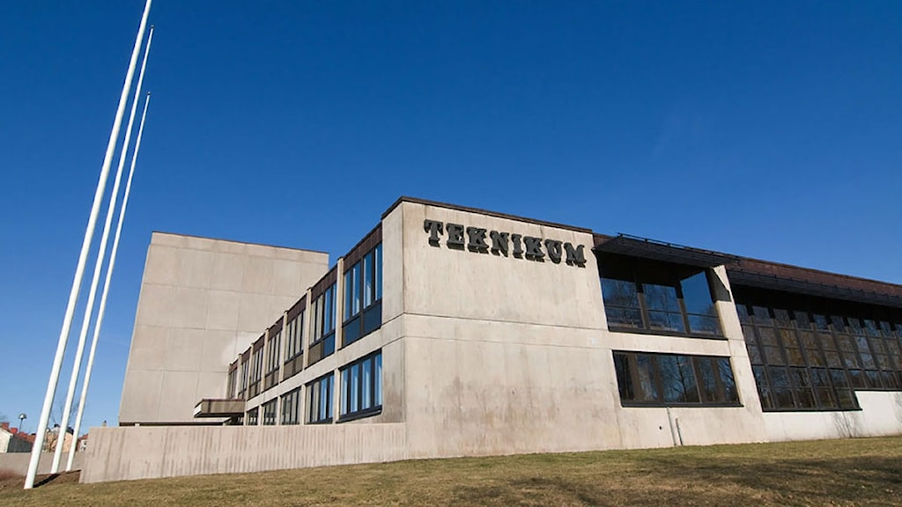

Jag är en 17 årig tjej som går på teknikum i TE20A, jag är en tvåa på skolan och jag trivs väldigt bra
Jag har programmerat förut men det har varit en lång tid sen dess. Jag tränade på språken Lua och Java script. Jag tyckte att Lua var ganska lätt och jag lyckades skapa ett litet spel men Java Script var svårare. Jag tycker att det är roligt att programmera för att man kan använda sin kreativitet till att skapa saker som till exempel webbsidor, spel eller robotar från bara några rader av text
Jag valde Teknikprogrammet för att programmering är mitt intresse eller min hobby, jag tycker att det är väldigt roligt att programmera.
Från vad jag har upplevt i första året så förväntar jag mig att lektionerna kommer vara roliga och intressanta, det känns som att det kommer vara svårt i några delar men annars så känns det bra.
